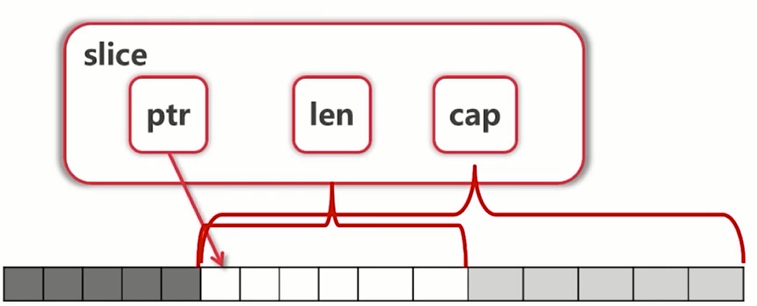

slice理解以及range
slice理解
slice本身没有数据，是对底层的一个view。
为什么这么说呢，可以看看slice的构造。
可以看到切片的结构体由3部分构成，Pointer 是指向一个数组的指针，len 代表当前切片的长度，cap 是当前切片的容量。cap 总是大于等于 len 的。
1 | type slice struct { |
使用时，切片类似动用的是指针，真正占用内存的是实际分配了内存的一个数组，所以说其本身没有数据。

更多slice的代码细节可以参考：深入解析 Go 中 Slice 底层实现
slice的扩展
先上一段代码：
1 | arr := [...]int{0, 1, 2, 3, 4, 5, 6, 7} |
结果是比较奇怪的，因为S1切片元素中没有元素[6]，为什么会出现这个现象呢，说到底还是由于slice的特性导致的，其作为对于底层数组的一个view。
s1 = arr[2:6]，s1这里依然作为arr数组的view，当s2在s1的基础上取数据时，操作的底层数组都为arr，而s1[3:5]下标对应的arr的元素恰好是[5 6]。
参考图片描述，可以看到不同slice，对应底层数组的下标变化。

slice的len限定了切片能够索引的数据，但并不代表slice只能“看到”len长度的数据，capacity才表示底层数组具体的内存大小。
也就是说：
1 | fmt.Printf("s2=%v \n", s2[2]) // 报错，panic: runtime error: index out of range |
总的可以继续得出：
slice可以向后扩展，不可以向前扩展
s[i]不可以超越len(s)，向后扩展不可以超越底层数组cap(s)
添加slice
添加元素时如果超越cap，系统会重新分配更大的底层数组
这里的重新分配，也就是意味着底层数据会被copy到一个新的内存，此内存的容量大于分配前的底层数组。至于会分配多大的内存，一般采取的是一次性给足，而不是适量分配。
例如：
1 | // https://www.cnblogs.com/baylorqu/p/9588733.html idea上运行正常 |
由于值传递的关系，必须接收append的返回值
append的用法：s=append(s,Val)
这里另举一个有意思的代码，引出下一个章节。
1 | v := []int{1, 2, 3} |
看这个代码是否可以猜到代码运行结果呢？程序是否会崩溃呢？
go range
在实际的打印结果中，可以看到打印是：
1 | [1 2 3 0 1 2] |
比较奇怪，打印成功，而不是死循环。
不是死循环，切片增加了三个元素，循环了三次，为什么会循环三次呢？好像和slice的长度有关系，粗略的看是可以这么看的，这里我找了下具体原因。
由于懒，先看了下前辈们是否有分析过这个问题，所以直接上了Google，果然没有让我失望，参考：Go Range 内部实现。
博客看到range语法糖还原部分，就可以得到我所需要的信息了。取自博客：
range 循环在内部实现上实际就是 C 风格循环的语法糖，意料之外而又在情理之中。编译器会对每一种 range 支持的类型做专门的 “语法糖还原”。比如，
1 | // slice |
可以看到的是，这个转化在编译器编译时完成，也就是说range循环的长度不会在运行时产生变化的，因为slice的长度是被直接赋值给了一个临时变量，所以slice本身的长度变化，并不能影响到整个循环的变化。
这段代码之所以会终止是因为它其实可以粗略的翻译成类似下面的这段：
1 | for_temp := v |
我们知道切片实际上是一个结构体的语法糖，这个结构体有着一个指向数组的指针成员。在循环开始前对这个结构体生成副本然后赋值给 for_temp，后面的循环实际上是在对 for_temp 进行迭代。任何对于原始变量 v 本身（而非对其背后指向的数组）的更改都和生成的副本 for_temp 没有关系。但其背后指向的数组还是以指针的形式共享给 v 和 for_temp，所以 v[i] = 1 这样的语句仍然可以工作。
这里引出我遇到的一个问题，我需要移除slice中的一些参数，于是在range中做一些判断，然后使用类似于arr = append(arr[:2], arr[3:]...)。
1 | func testRangeSlice(arr []int) { |
执行结果：
1 | 0xc000042400 |
可以看到执行结果出现了重复的数据，原始数据的4没有被访问到，这里依然是range语法糖还原后造成的这个结果。中期改变切片，造成切片数据的变化（这里应该是造成了底层数组的真实变化），因为长度早已被固定，这里依然会选择循环6次，而slice的容量没有因为append操作改变，依然为6。
本文标题：slice理解以及range
文章作者：小师
发布时间：2018-10-22
最后更新：2022-05-04
原始链接：chunlife.top/2018/10/22/slice理解/
版权声明：本站所有文章均采用知识共享署名4.0国际许可协议进行许可